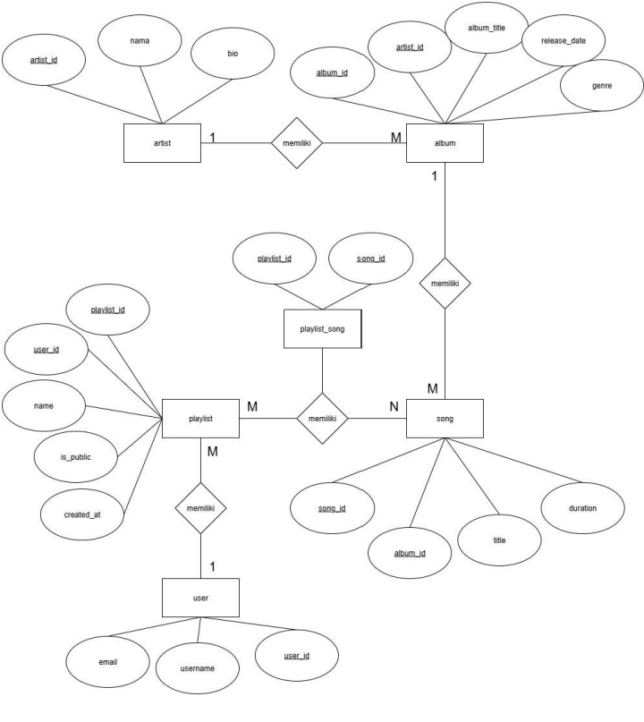
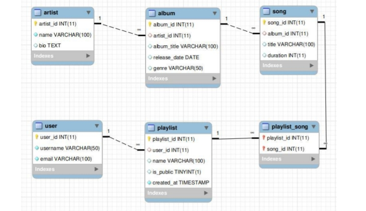
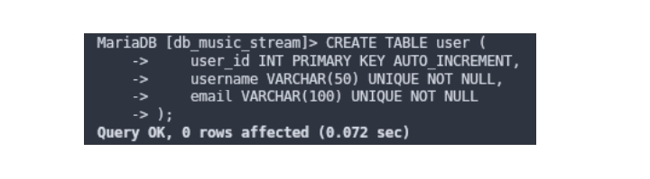
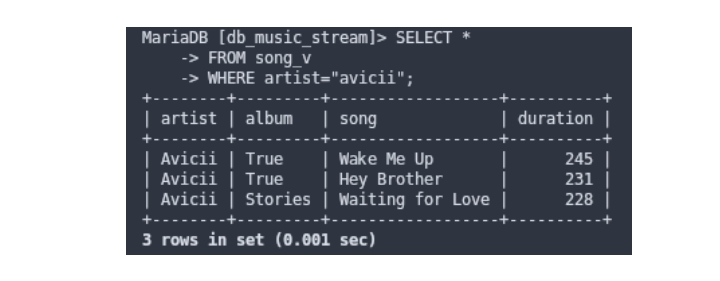
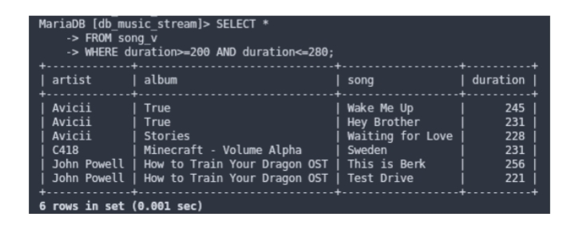
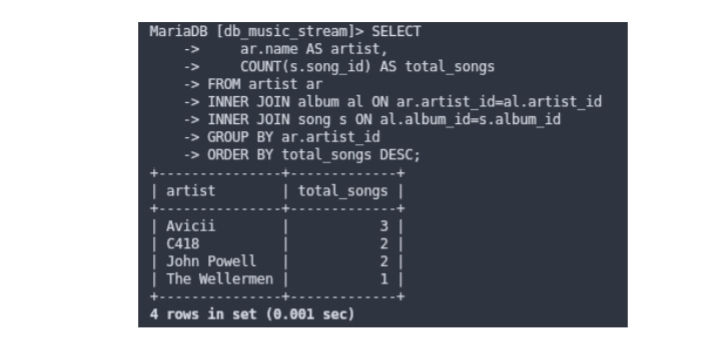
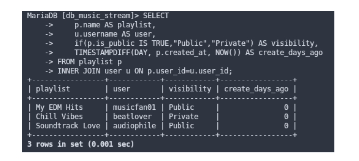
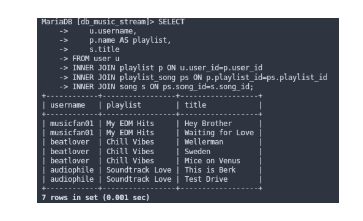

Project Overview
Music streaming platforms manage millions of songs, artists, albums, playlists, and user interactions every day. To support these operations efficiently, a well-structured database design is essential. This project designs and implements a relational database for a Music Streaming Playlist Platform using MySQL, managing users, artists, albums, songs, playlists, and playlist-song relationships while maintaining data integrity through primary and foreign key constraints.
SQL Query Explorer
Pick a table on the left to see its schema, then pick a query preset and click Run Query. This simulates the real queries in db_music_stream.sql — with JOIN, WHERE, BETWEEN, and GROUP BY.
Click a table to see columns, PK, FK, and what it stores.
Choose one of 6 real queries from the project — from simple JOIN to Many-to-Many.
Read SQL + result + why it matters. That's what a data / backend role checks.
One Artist → Many Songs
SELECT artist.name, album.title, song.title, song.duration FROM artist JOIN album ON artist.artist_id = album.artist_id JOIN song ON album.album_id = song.album_id;
Database Schema
6 tables, normalized to 3NF.
| Table | Description |
|---|---|
user | Stores user information |
artist | Stores artist information |
album | Stores album information |
song | Stores song information |
playlist | Stores playlist information |
playlist_song | Junction table — Playlist ↔ Song |
playlist_song solves Many-to-Many. One Playlist can contain many Songs, one Song can appear in many Playlists.System Features
What the database supports.
User Management: Store user info, manage playlist ownership
Artist Management: Store artist info, track songs & albums
Album Management: Manage albums, associate with artists
Song Management: Store song info, track duration
Playlist Management: Create public / private playlists
Playlist-Song: Many-to-Many via junction table
Database Design Diagrams
Click to zoom.
ERD — Entity Relationship Diagram

LRS — Logical Record Structure

Database Development Workflow
How it was built.
1. Requirement Analysis
2. Entity Identification
3. ERD Design
4. LRS Design
5. Database Implementation
6. SQL Operations
7. Testing & Validation
SQL Implementation
DDL, DML, DQL, VIEW.
DDL: CREATE DATABASE, CREATE TABLE, ALTER TABLE, PRIMARY KEY, FOREIGN KEY
DML: INSERT, UPDATE, DELETE
DQL: SELECT, JOIN, GROUP BY, ORDER BY, WHERE, Aggregate Functions
Objects: VIEW
CREATE TABLE artist ( artist_id INT AUTO_INCREMENT PRIMARY KEY, name VARCHAR(100) );
Query Results & Analysis — Real Screenshots
Real phpMyAdmin results. Use Playground above to try the same queries interactively.
Artist, Album, Song & Duration

Songs Created by Avicii

Songs Between 200–280 Seconds

Total Songs by Artist

Playlists Created by Users

Songs Inside Playlist

Key Learning Outcomes
Skills demonstrated.
Database Design & Relational Modeling
ERD & LRS Modeling
Database Normalization to 3NF
SQL Programming: DDL, DML, DQL
CRUD & Data Integrity (PK / FK)
Query Optimization Fundamentals
Repository & Files
Source files.
music-streaming-playlist-database/ ├── database/ │ └── db_music_stream.sql ├── docs/ │ └── Database_Report.pdf ├── images/ │ ├── erd.jpg │ ├── lrs.jpg │ └── query_*.jpg └── README.md
Future Improvements
Next steps if continued.
User Authentication • Music Recommendation Engine • Song Rating • Playlist Sharing • Web-Based Interface • Mobile Integration • Stored Procedures • Triggers • Database Security Enhancement